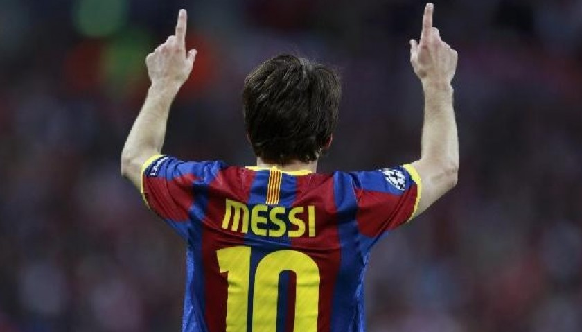
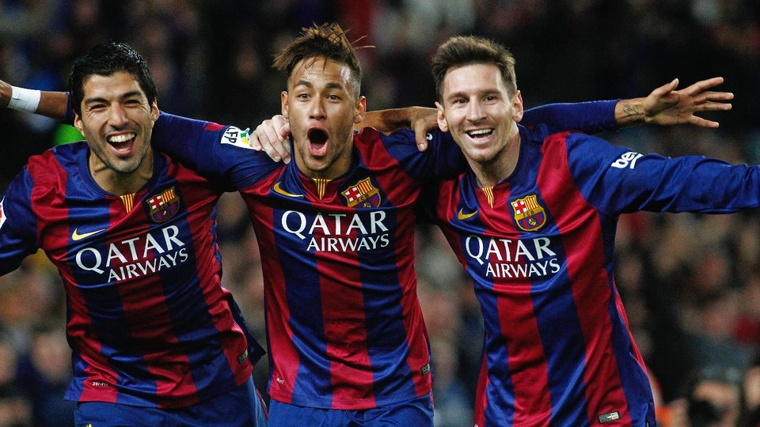

Lionel Messi
Wie is Lionel Messi?
Lionel Andrés Messi Cuccittini. Geboren in Rosario,Argentinië op 24 juni 1987
, kortweg Lionel Messi is een Argentijns-Spaans voetballer die doorgaans als aanvaller speelt.
Hij wordt beschouwd als een van de beste spelers aller tijden.
Messi stroomde in 2004 door vanuit de jeugdopleiding van FC Barcelona
, waar hij al zijn successen behaalde totdat hij in augustus 2021 gedwongen de club verliet
en een tweejarig contract tekende bij Paris Saint-Germain. Vanwege zijn lengte en snelheid
draagt hij de bijnaam La Pulga

